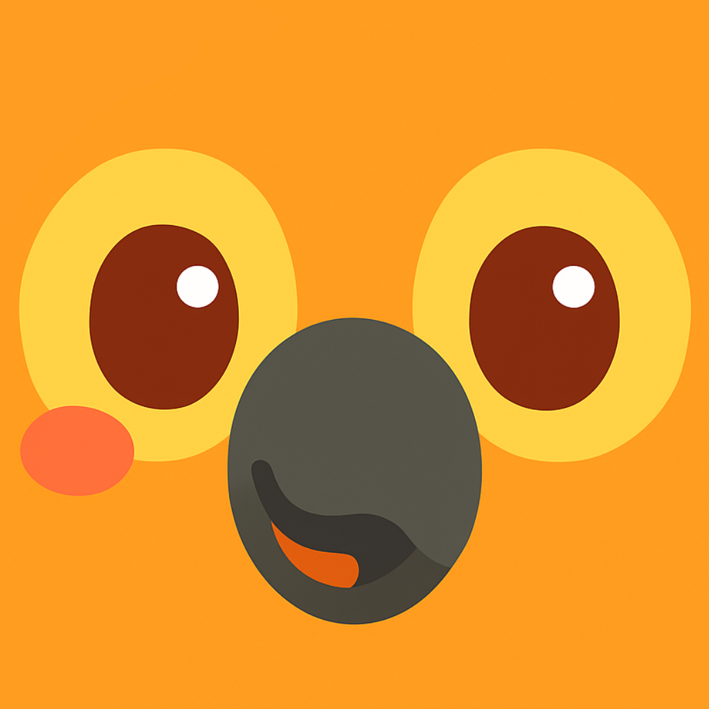

skopapel
Building mobile applications that feel effortless, joyful, and inclusive. We craft apps that care about their impact, lift up communities, and spark change with bold ideas. Rooted by the sea in Curaçao.
Reach out at kyara@skopapel.co
our applications

Lora - Learn Papiamentu
The #1 app to start speaking Curaçao & Bonaire's native language.